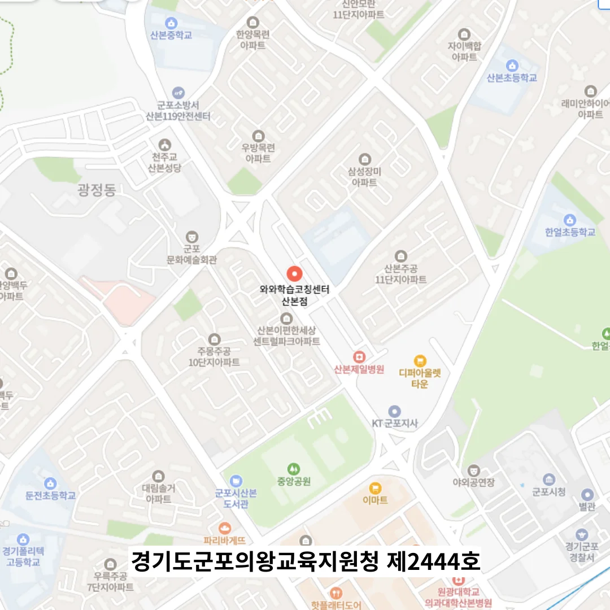

산본 예비고3 소수정예학원
산본 예비고3 소수정예학원
자주 나오는 문제를 따로 정리하지 않더라도, 개념별 요약 자료를 교실 벽에 붙여 두어 수시로 복습할 수 있게 한다. 산본 예비고3 소수정예학원은 이 과정에서 학생의 사고과정을 들여다보는 메타인지 수준 점검을 함께 진행하는데, 문제를 풀기 전 ‘나는 왜 이 방법을 선택하는가’를 말로 설명하게 하거나, 틀린 후 ‘내가 왜 이걸 선택했을까’를 되짚게 하며 자기 설명학습을 유도한다. 이는 단순한 시간 관리가 아니라, 감정과 인지를 통합한 자기 이해의 도구가 되며, 학습자 스스로 자신의 리듬을 읽어내고 조절할 수 있는 힘을 길러준다. 학습은 반복의 양으로 결정되지 않는다. 자기 학습 리듬을 주기적으로 재설계하도록 지도하면 학생은 변동하는 학습 환경에 유연하게 대응할 수 있다. 학습 공간 내 각 자리 위에 개별로 설치된 LED 독서등을 통해 개인의 조도를 최적화함으로써 눈의 피로를 줄이고 집중 시간을 연장하는 행동을 시작합니다. 공부 루틴은 일주일 단위로 조정하여 각 요일마다 다른 유형의 학습을 배치하고, 매주 월요일 아침에 전 주의 기록을 바탕으로 수정사항을 반영한다.